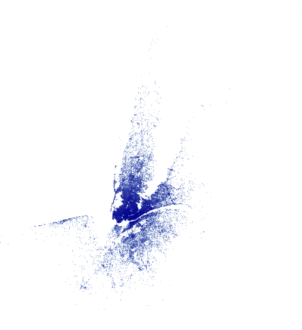
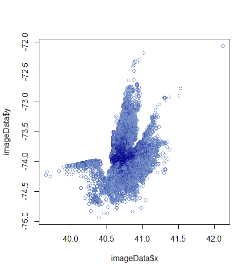
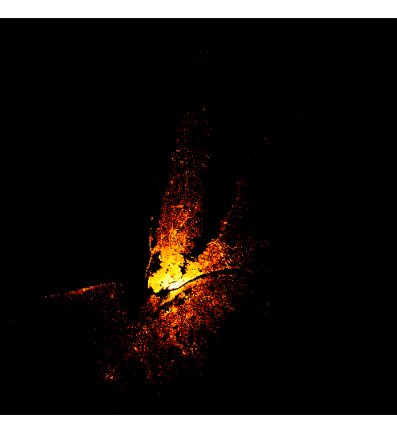
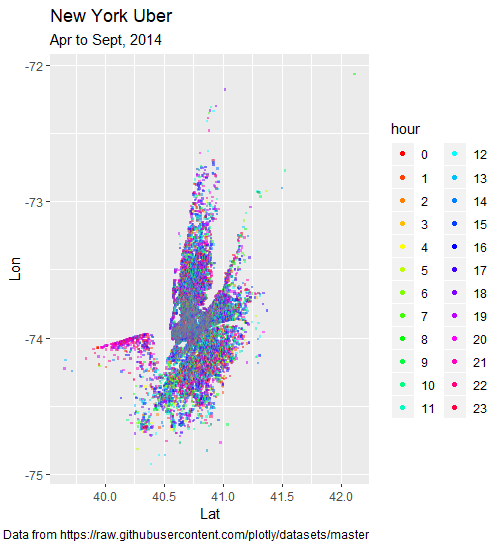
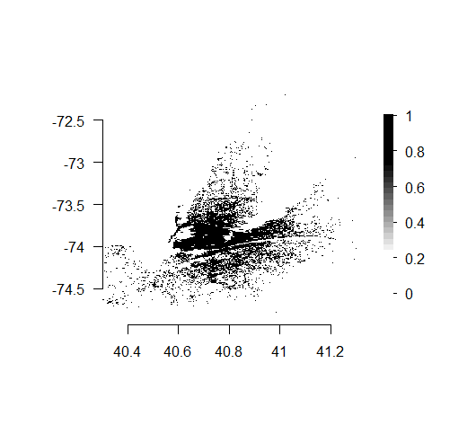

Introduction to rasterly
Zehao Xu
2020-06-03
introduction.Rmdrasterly makes it easy to rapidly generate raster images for large datasets. Although the package is inspired by the Datashader library available for Python, rasterly does not attempt to reproduce all the features of Datashader. Rather, rasterly offers comparable performance to Datashader when generating rasters from source data. rasterly attempts to provide a flexible, convenient interface which should feel familiar to users of ggplot2 and its aesthetics-based approach to customizing plots and figures.
A raster may be described as a matrix of cells or pixels arranged in grid-like fashion, in which each pixel represents a value in the source data. When combined with the package and Plotly.js, rasterly enables analysts to generate interactive figures with very large datasets which are responsive enough to embed into Dash for R applications.
The rasterly function creates a rasterly object, to which aggregation layers may be added. This function is the first step in the process of generating raster image data using the package. The rasterly function is not intended to be used in isolation, since aggregation layers are required for full functionality.
Data set
The dataset used in this vignette describes Uber trips taken in New York City from April 1st to September 30th of 2014.
# Load data
ridesRaw_1 <- "https://raw.githubusercontent.com/plotly/datasets/master/uber-rides-data1.csv" %>%
data.table::fread(stringsAsFactors = FALSE)
ridesRaw_2 <- "https://raw.githubusercontent.com/plotly/datasets/master/uber-rides-data2.csv" %>%
data.table::fread(stringsAsFactors = FALSE)
ridesRaw_3 <- "https://raw.githubusercontent.com/plotly/datasets/master/uber-rides-data3.csv" %>%
data.table::fread(stringsAsFactors = FALSE)
ridesDf <- list(ridesRaw_1, ridesRaw_2, ridesRaw_3) %>%
data.table::rbindlist()
# Extract hour of trip taken
time <- lubridate::ymd_hms(ridesDf$`Date/Time`)
ridesDf <- ridesDf[, 'Date/Time':=NULL][, list(Lat,
Lon,
hour = lubridate::hour(time),
month = lubridate::month(time),
day = lubridate::day(time))]This dataset has 4,533,327 observations, and includes the variables “latitude”, “longitude”, “hour”, “month” and “day”.
Basic
If we were to use graphics::plot(), it would take several minutes to render the image. What if we “rasterized” the image instead?
start_time <- Sys.time()
p <- ridesDf %>%
rasterly(mapping = aes(x = Lat, y = Lon)) %>%
rasterly_points()
p
end_time <- Sys.time()
end_time - start_time
A raster image, in essence, is a large sparse matrix and each element is a hexadecimal color (A character vector with elements of 7 or 9 characters, “#” followed by the red, blue, green and optionally alpha values). Since the range (x, y) of this display can be acquired, we can also map the image into a data.frame with mapping coordinates x, y and color. For example:
## [,1] [,2]
## [1,] "#404040" "#BFBFBF"
## [2,] "#808080" "#FFFFFF"# mapping this image onto a 1 <= x <= 2 and 2 <= y <= 5 plane
rasterly::image2data(image, x_range = c(1, 2), y_range = c(2, 5))## x y color
## 1: 1 5 #404040
## 2: 1 2 #808080
## 3: 2 5 #BFBFBF
## 4: 2 2 #FFFFFFIn this way, we can transform a large dataset (million or billion) into a raster image (say 400 \(\times\) 400), then, mapping this image to a data.frame but dropping blank ones. So the size can decrease from 160000 to rough 30k or 40k (It really depends on data). In other word, we can always reduce a huge size to a reasonable size and the darkness of color is judged by the “Reduction Function” (see section ‘API’ for more info)
imageData <- rasterly::image2data(p)
# basic graphics
# It is slow but still much faster than drawing the huge data directly)
plot(x = imageData$x, y = imageData$y, col = imageData$color)
rasterly Structure
Subsetting
rasterly() generates a parent layer containing initial settings to generate the raster, which include plot_height, plot_width among others; child layers such as rasterly_points() can be piped in as well. Note that “p” above is a list of environments. The elements in “p” can be easily extracted or replaced by [ and [<-.
p["background"]
# $rasterly_env
# [1] "white"
# $rasterlyPoints1
# [1] "white"
########### Replace the background in child layer `rasterly_points()`
p["background", level = 2] <- "black"
p["background"]
# $rasterly_env
# [1] "white"
# $rasterlyPoints1
# [1] "black"
########## Colors in both `rasterly()` and `rasterly_points()` are replaced
## fire is a vector of colors (as character strings) with length 256
## see `rasterly::fire`
p["color", level = 1:2] <- fire_map
p
-
levelhelps to define which layer to replace; the default is1(the parent layer generated byrasterly()). - Available states which can be extracted or replaced are listed here:
- Aggregation:
data,mapping,plot_width,plot_height,range,x_range,y_range,xlim,ylim,aesthetics,reduction_func,glyph,max_size,group_by_data_table,drop_data,variable_check - Display:
background,color,alpha,span,show_raster,layout
- Aggregation:
Build rasterly by rasterly_build()
To retrieve display info, use rasterly_build():
It contains:
- agg: aggregation matrices, a list of numerical matrices
- image: a raster matrix (has the same dimension with aggregation matrices)
- lims: a list of x limits and y limits for each layer
- x_range: the range of x over all layers
- y_range: the range of y over all layers
- plot_height: plot height, number of rows in aggregation matrix
- plot_width: plot width, number of columns in aggregation matrix
- variable_names: names of variables
- background: background color
- colors: color used to map in each pixel or used for categorical variable. It is distinguished by whether “color” is set in
aes()or not
Display
rasterly does not provide any functionality to display the raster image data it generates, but instead relies on other packages.
plotly graphics
-
add_rasterly_heatmap(): Layers are added to Plotly objects viaadd_trace(...);rasterlyprovides theadd_rasterly_heatmap()function which also leveragesadd_heatmap()to generate single channel heatmap overlays for Plotly figures. Multi-channel heatmaps are not currently supported; this feature will be available in an upcoming release.plotly::plot_ly(ridesDf, x = ~Lat, y = ~Lon) %>% add_rasterly_heatmap() %>% layout( title = "Uber drives", xaxis = list( title = "Lat" ), yaxis = list( title = "Lon" ) )
-
plotRasterly():plotRasterlyhas very similar API withrasterlybut return aplotlyobject.
ggplot graphics
ggRasterly takes the arguments from rasterly and returns a ggplot object. In this case, image will be transformed to a data.frame automatically.
ggRasterly(data = ridesDf,
mapping = aes(x = Lat, y = Lon, color = hour),
color = hourColors_map) +
labs(title = "New York Uber",
subtitle = "Apr to Sept, 2014",
caption = "Data from https://raw.githubusercontent.com/plotly/datasets/master")
API
rasterly application programming interface
Mapping system
- Set
color
Different colors represent different hours:
r %>%
rasterly_points(
mapping = aes(color = hour),
color = hourColors_map,
background = "black"
) -> g
# `plot(g)` involves axes and legend as well
plot(g, xlab = "latitude", ylab = "longitude",
main = "NewYork Uber Visualization",
legend_main = "hour",
legend_label = 0:23)
The colors attribute in “image” within build_g is generated via weighted arithmetic means (default) computed from the aggregation matrices. We can choose the “cover” layout to display multiple aggregation matrices:
r %>%
rasterly_points(
mapping = aes(color = hour),
color = hourColors_map,
background = "black",
layout = "cover"
) -> g
plot(g, xlab = "latitude", ylab = "longitude",
main = "NewYork Uber Visualization",
legend = FALSE)
The resulting raster will be overlaid onto the plotting surface.
- Set
on
reduction_func is implemented on which variable
r %>%
rasterly_points(
# take the "mean" reduction function
# more details are in section 'Reduction function'
reduction_func = "mean",
mapping = aes(on = -Lat)
) - Set
size
To control the number of pixels allocated to an observation, we can set the size aesthetic; when specified, the max_size argument provides the upper bound of the number of pixels a single observation is allocated:
Currently, only x, y, color, on and size can be set using aes().
Reduction function
A reduction operator function is used when aggregating data points within each bin. One option is to reduce using the mean of the points.
-
meanreduction function:r %>% rasterly_points( reduction_func = "mean", # process the data points using the mean reduction function background = "black", # change background to "black" from right to left (from dark to light) color = fire_map # provide a custom color_map )
The mean reduction function averages the y column (default setting) for every observation. It’s also possible to average over other features using the on aesthetic; consult the list of available reduction functions below for additional details.
-
anyreduction function:# zoom in r %>% rasterly_points( reduction_func = "any", color = c("white", "black") ) %>% plot(xlim = c(40.3, 41.3))
Currently supported reduction functions:
sum: Ifonis not provided withinaes(), the default is to take the sum within each bin. Whenonis specified, the function reduces by taking the sum of all elements within the variable named inon.any: Whenonis provided withinaes(), theanyreduction function specifies whether any elements inonshould be mapped to each bin.mean: Ifonis not provided in mappingaes(),onwould be set as variable “y” by default. Whenonis given, themeanreduction function takes the mean of all elements within the variable specified byon.
The following functions require that on is first provided via aes():
m2: Them2function computes the sum of square differences from the mean of all elements in the variable specified byon.var: Thevarfunction computes the variance over all elements in the vector specified byon.sd: Thesdfunction computes the standard deviation over all elements in the vector specified byon.first: Thefirstfunction returns the first element in the vector specified byon.last: Thelastfunction returns the last element in the vector specified byon.min: Theminfunction returns the minimum value in the vector specified byon.max: Theminfunction returns the maximum value in the vector specified byon.